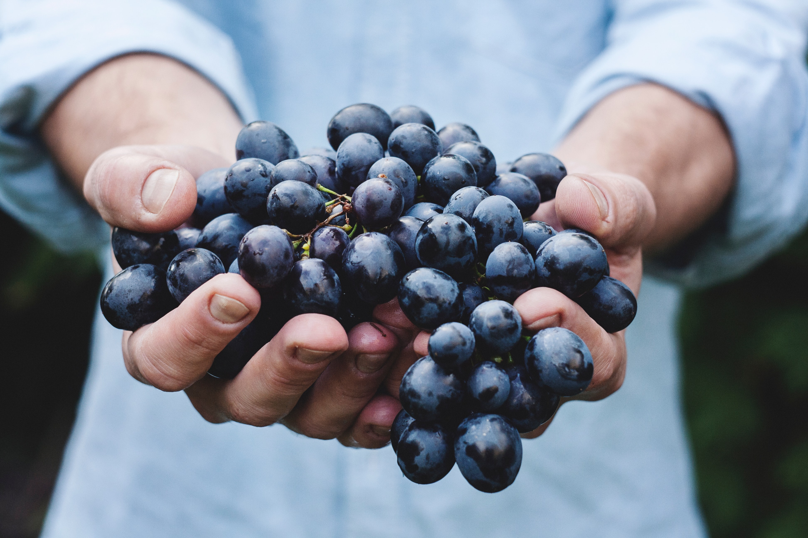
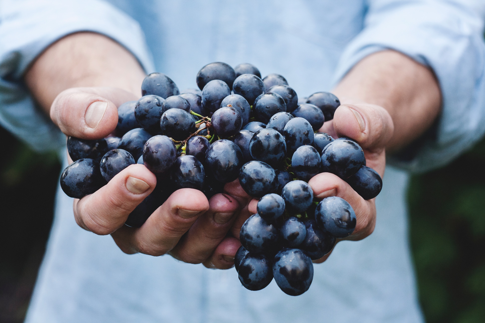

Le vin du moment
Produit et mise en bouteille à
Veneto, Italie
Sur le coteau , à la confluence des climats océaniques et continentaux, les vignes de Veneto traduisent à merveille la terre qui les fait vivre. Les tris effectués dès le début de la récolte affinent la précision de chaque cuvée et contribuent à donner la meilleure expression de nos terroirs. Les vins secs en sont la parfaite illustration ; vinifiés dans la plus pure tradition de la maison, on y ressent aussi bien le fruité des argiles du Haut-Lieu, le ciselé minéral des silex du Mont et la rondeur des calcaires du Clos du Bourg.

Le domaine
Le Domaine Aventi fondé en 1928 par Victorio Avanti et son fils Camillo compte aujourd’hui trente hectares de Chenin planté sur trois parcelles. Le domaine fut l’un des précurseurs de la culture biodynamique dans le vignoble italien. Cette méthode de culture qui respecte le sol, la plante et l’environnement, permet de développer le caractère de nos vins et de conserver l’authenticité des terroirs. Les travaux de la vigne sont guidés par les différents rythmes des planètes, à la manière, plus ou moins consciente, des vignerons des siècles passés.
Visiter le domaineLe vignoble
Contrairement aux idées reçues, le vignoble italien aurait été implanté par le peuple Etrusque, les Grecs n'ont fait qu'améliorer et modifier l'encépagement, ils ont appelé ce pays "Oenotria" : le pays du vin. A l'apogée de l'empire romain, le vin tenait une place importante dans la vie quotidienne et déjà certaines régions se démarquaient par l'excellence de leur produit.
 
